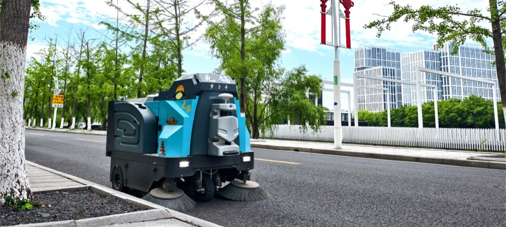
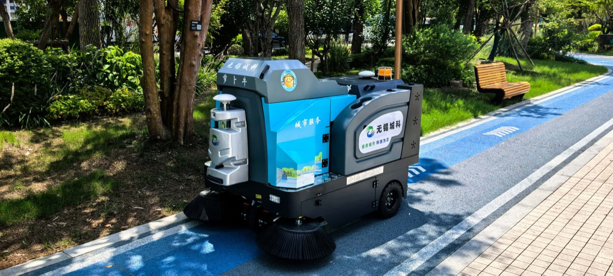
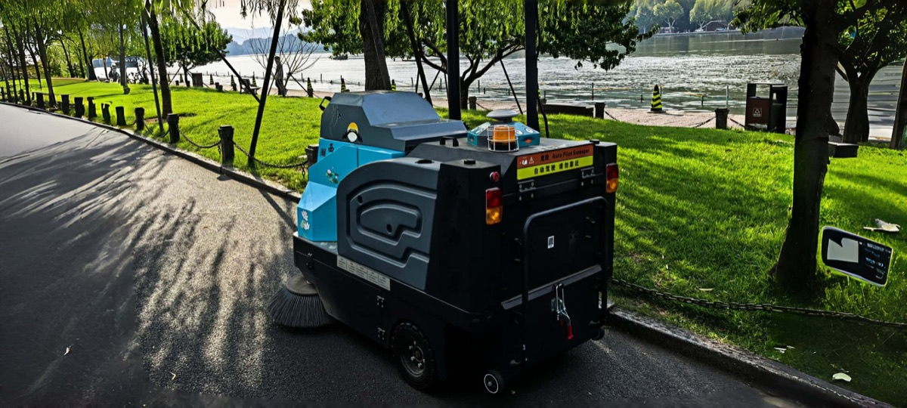
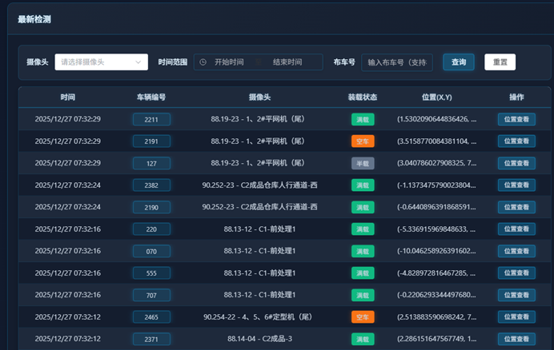
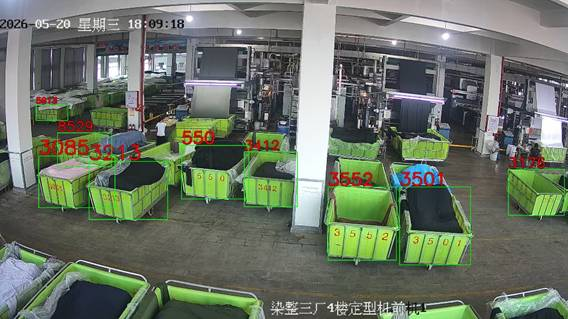
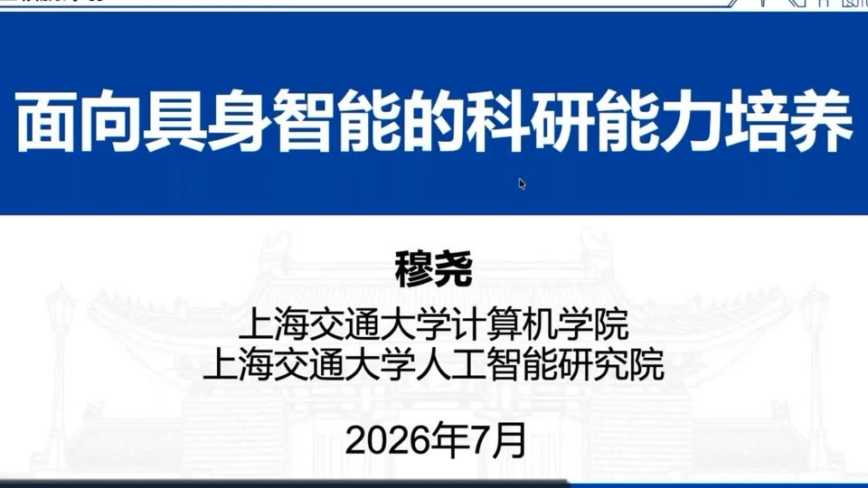
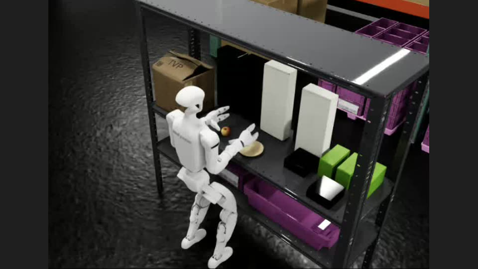
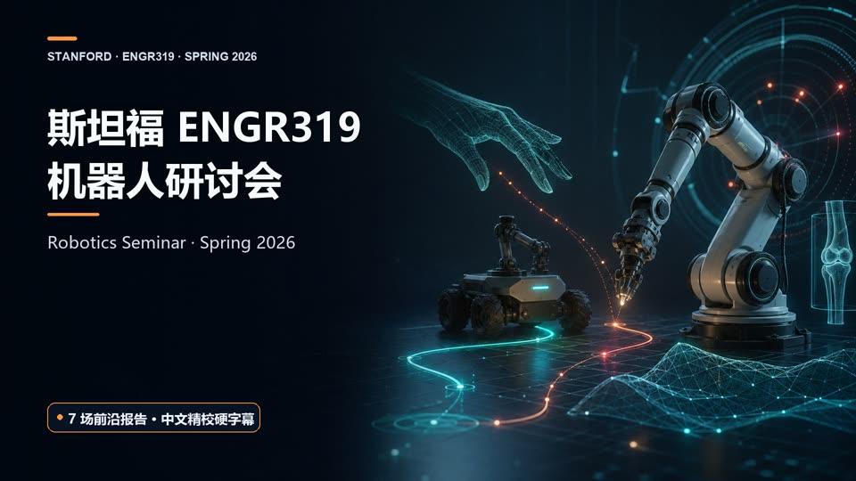

关于
我目前的研究聚焦于让机器人更好地理解真实世界，并与之进行长期、可靠的互动。
“如果你能看，就要看见；如果你能看见，就要仔细观察。” ——若泽·萨拉马戈《失明症漫记》
近况
论文
审稿中
已发表
专利
发明专利 4 项（授权 1、实审 2、受理 1）：大型户外场景无人车高精地图构建 · 室外低速无人扫地车激光雷达盲区避障 · 结构化路面无人清洁车行为规划 · 动态需求下的单车通道车辆路径优化。
课题项目
智能网联汽车的车控操作系统关键技术研究
参与 SmartKit 混合关键系统的实现，并在无人车平台完成 ROS 故障恢复验证。 系统通过虚拟化实现多操作系统并行与安全隔离，由实时操作系统监控 Linux 客户机， 故障时切换至预加载的备用虚拟机，相关成果发表于 IROS 2024。 主笔中期答辩材料，并作为浙江大学代表参与答辩。
汽车电控单元软件自动化测试验证工具
组织浙大学生团队完成系统开发，设计 ECU 智能检测平台与 ASAM 协议层， 完成与 HIL 设备的对接，使测试用例可自动生成与执行。 主笔课题中期与结题答辩材料，组织筹备专家会议与结题验收会议，并牵头验收演示。
工程项目
我在机械臂、足式机器人与各类无人车上完成过系统开发与现场部署。
VLA 与视觉语言导航的真机部署
从零搭建真机采集与部署环境：以 PICO 头显构建遥操作示教系统，配合定位模块提供连续可复现的 位姿输入，使每条轨迹的图像、关节状态与下发指令严格对齐。在 Piper 与 Franka 机械臂上基于 π0.5 完成叠衣服等柔性物体操作，在宇树 G1 上完成操作策略的真机部署， 并在宇树 Go2 上实现自然语言指令驱动的视觉语言导航。
Techinao RoboNeo 户外无人清洁车
从零搭建整车软件栈，涵盖嵌入式控制、相机与激光雷达的硬件选型与集成 （引入 Mid-360、RTK 等），以及建图、定位、导航与规划等核心模块；并在车端部署 基于 MoGe-2 的单目深度估计系统，带队完成多代车型迭代直至量产。 RoboNeo Max / Pro / C99 系列目前在景区、商场与工厂仓储日常运行。 CurbMapping 与四项发明专利均源自这个平台。



图片由无锡太机脑智能科技提供。
布车慧眼 - 印染布车定位与追踪
系统以视觉识别布车编号及空满状态， 支持按工单或车号查询位置、异常滞留告警、轨迹追溯、订单地图和空车查询； 换车检测结果可同步至 ERP / MES，使能耗、工艺与产量数据按工单自动切割， 减少人工找车与切卡造成的等待和记录误差。系统现已完成产品化，并在十余家工厂部署。


图片来源：布车慧眼公开项目页。
山东岚山港 无人铲车与无人扫地车
负责运营中散货港口的建图与定位，部署无人履带式铲车完成三公里渣土传送带沿线的 清洁作业。该场景结构化特征稀疏，粉尘与振动持续存在，作业不允许中断， 且三公里的单程里程使轨迹漂移成为主要误差来源，对定位的长时稳定性要求高于 瞬时精度。基于 FAST-LIO 完成离线建图并补充关键帧策略以抑制漂移，再以 NDT 配准实现全局重定位，使系统在开机与作业中断后都能快速恢复位姿；并在现场完成 部署与调试。
天门山无人车挑战赛 · 车辆控制
负责车辆控制部分，在实车上完成 openpilot 横纵向控制的适配与调试。 赛道为天门山通天大道，含 99 道急弯与 1100 米垂直落差， 并存在卫星信号中断与视野受限的情况。
科研能力
教育背景
荣誉
联系
学习资料收藏

Bilibili · CCF 青年领航计划 面向具身智能的科研能力培养 上海交大 ScaleLab 穆尧关于具身智能研究所需科研素养的分享。
NVIDIA Learning · 实践教程 Isaac GR00T + Unitree G1 仿真工作流 从 Isaac Lab-Arena 环境、遥操作采集到 GR00T 1.7 微调与闭环评测。
Bilibili · 机器人前沿 Stanford ENGR319 机器人研讨会（2026 春） 七场前沿报告，涵盖机器人学习、规划、交互、自主系统与可信机器人。